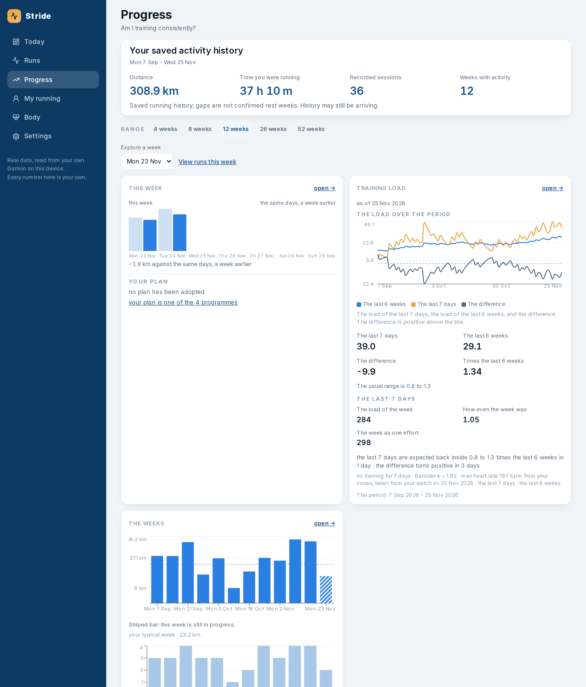
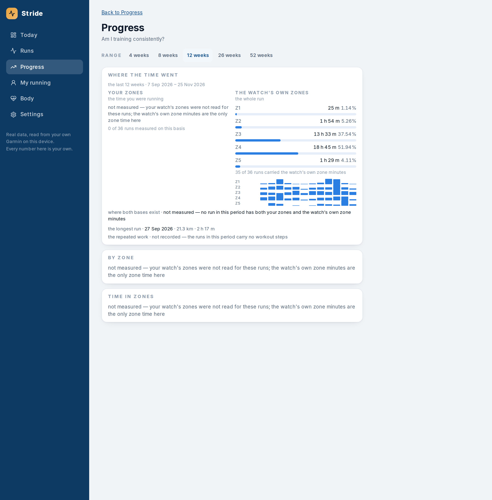
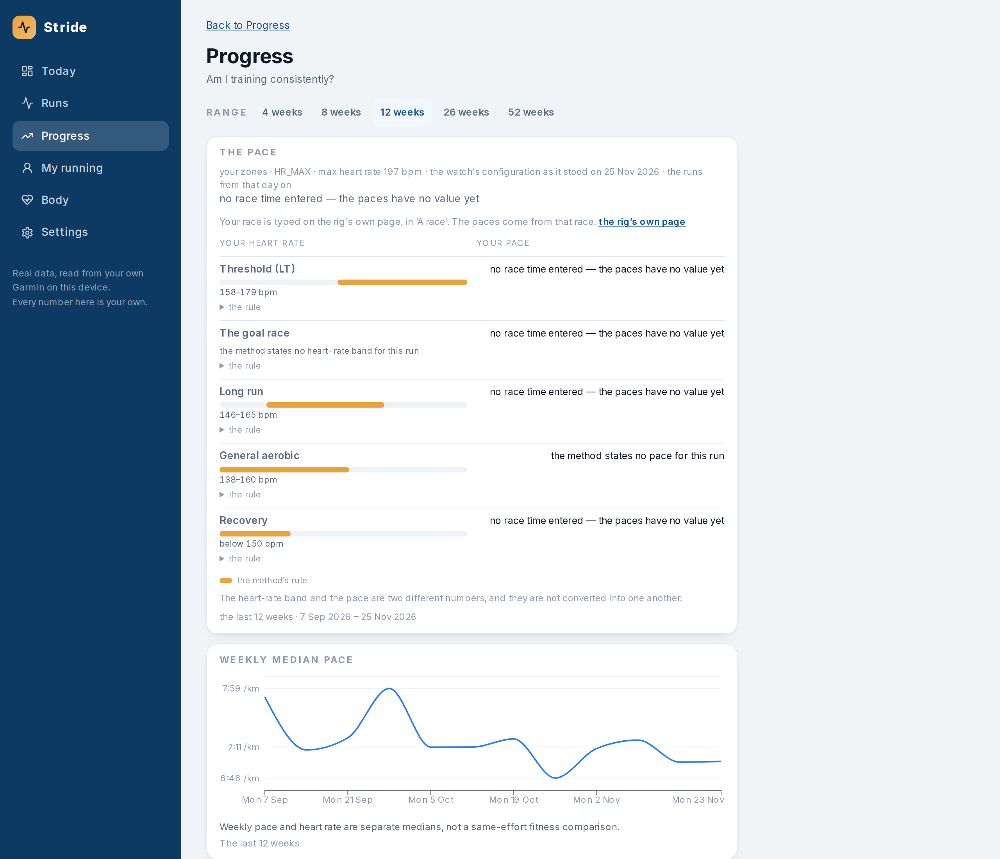
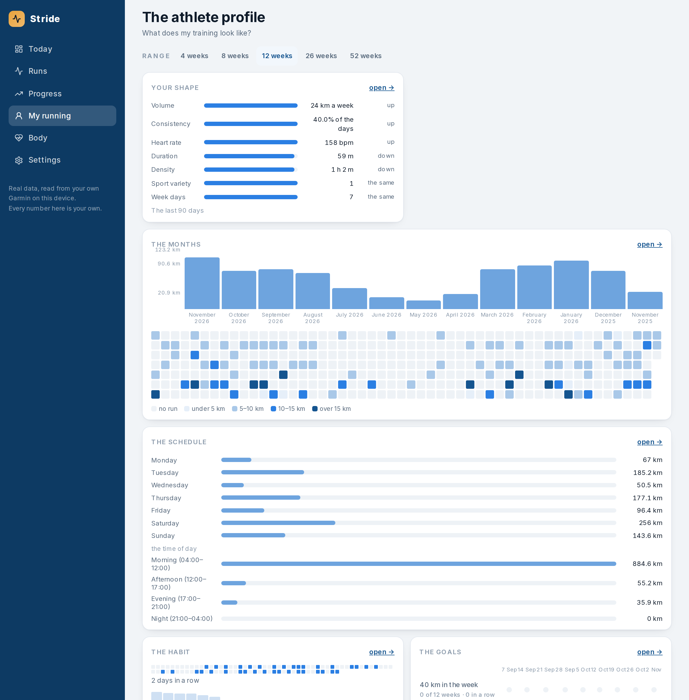
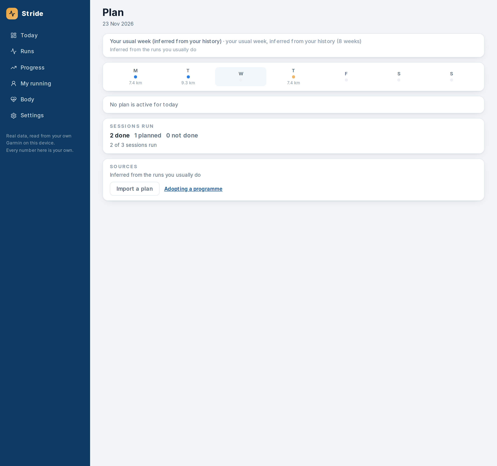
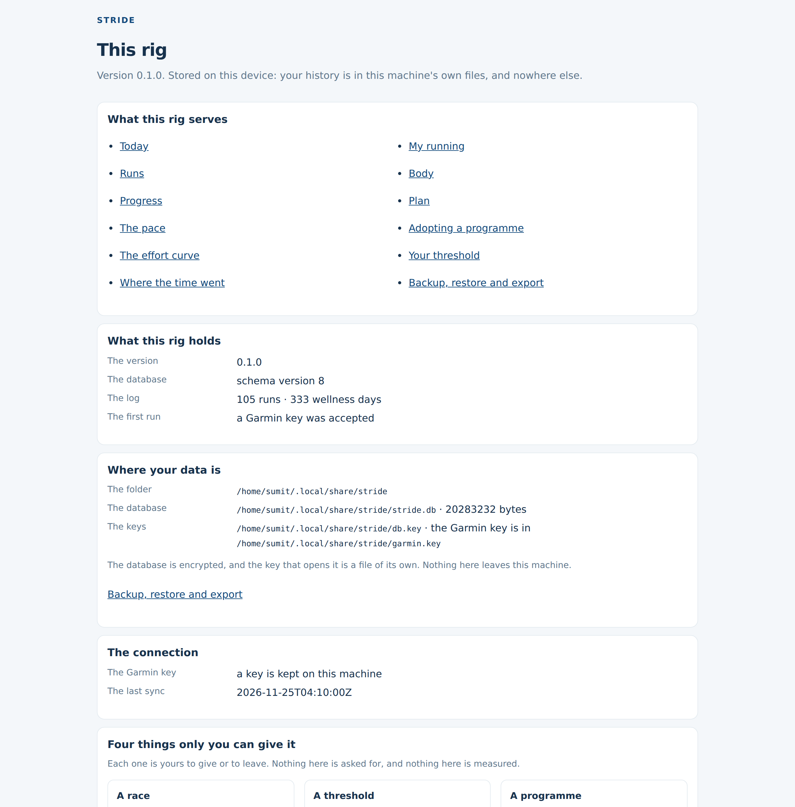

The wall — eleven cardsThis week now carries the plan's week against the week that happened.

The ledger's two blocksYour zones on one basis, the watch's own zones on the other, each with its own coverage.

The ladderWith the door: where the race is typed, and what comes from it.

The scheduleThe day's four parts, read in the athlete's own hours.

The planThe adopted programme, the week, the paces, and the threshold they were worked out from.

The rig's own pageWhat this machine is serving, where the data is, and the four things only the athlete can give it.
